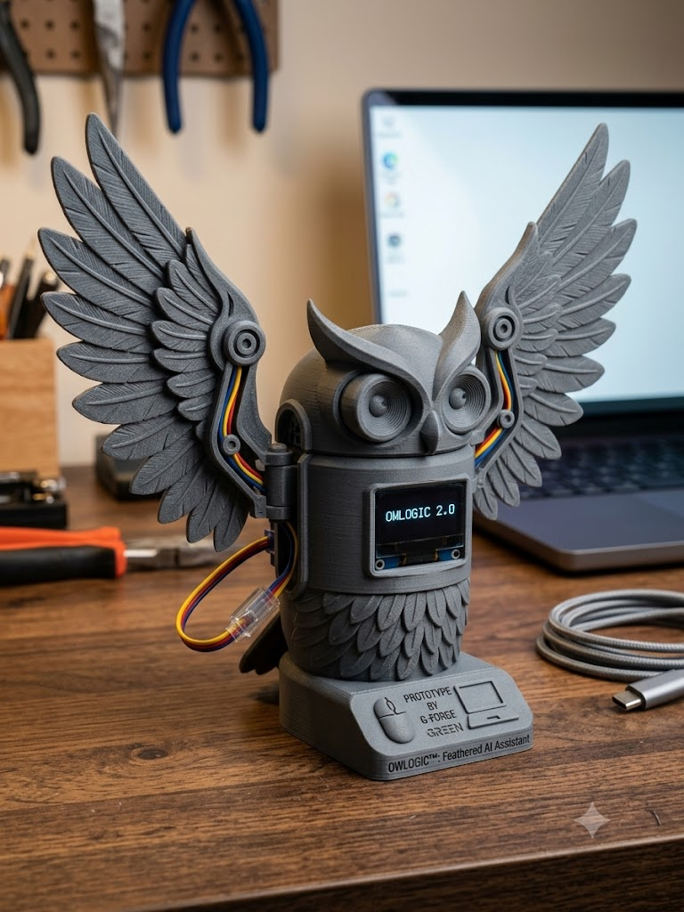

It stays local
YEMI uses a local Ollama model. Its thoughts stay on the same machine where it lives.
YEMI is a small, slightly silly desktop pet with a local AI brain and a physical ESP32 body. Feed it your notes, keep it happy, and watch it slowly become itself.

my stomach is making noises... feed me something?
YEMI uses a local Ollama model. Its thoughts stay on the same machine where it lives.
Notes, lessons, and games live in separate memory pools. Its personality grows from what you give it.
An ESP32 runs its OLED face, moving ears, and touch sensor—so a pet on screen can react in your hands.
Use the golden fridge to offer YEMI a study note, file, or idea.
It reacts with local AI, then stores that snack with its other memories.
During a growth cycle, it rereads its memory and rewrites who it is becoming.
The desktop companion is connected to an OLED face, servo ears, and a touch sensor. When YEMI is sad, touch can make it feel safe again.